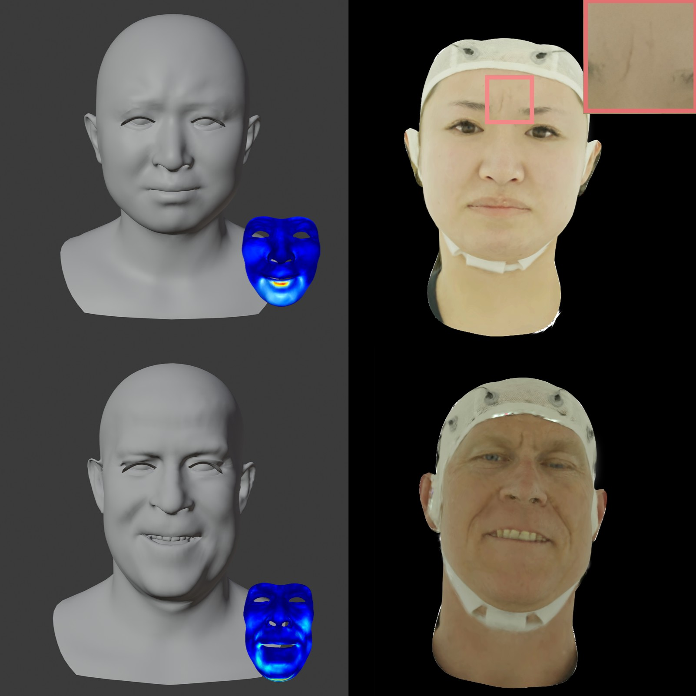
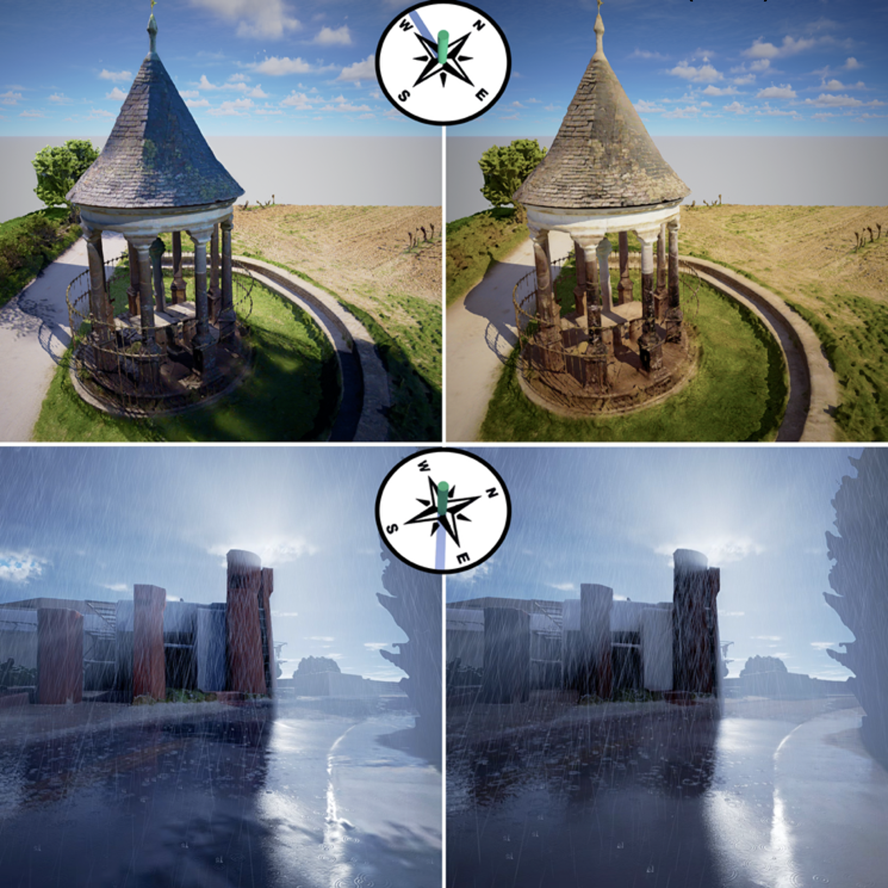
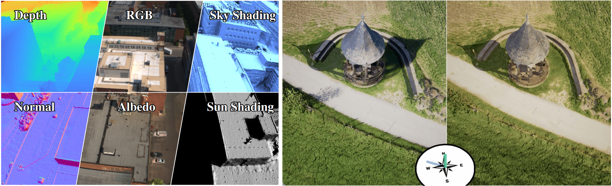
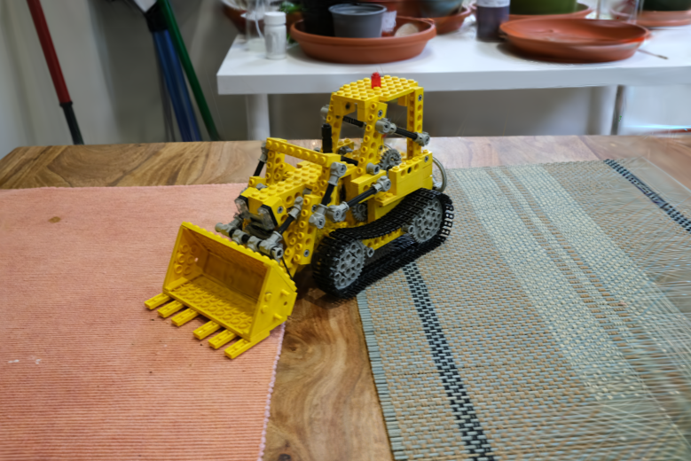

Haolin Xiong
Email: hx_624 at usc dot edu
I'm a PhD student in Computer Science at the University of Southern California - Institute for Creative Technologies (USC-ICT), advised by Assistant Professor Yajie Zhao.
Previously, I earned my M.S. in Electrical and Computer Engineering from UCLA, where I was advised by Professor Achuta Kadambi and Professor Lin Yang. I also hold an M.S. in Business Analytics and dual B.S. degrees in Computer & Systems Engineering and Economics from Rensselaer Polytechnic Institute.
CV /
Linkedin /
Twitter /
Github
|
|
Research
My research interests broadly span 3D vision and perception, with occasional work on 2D vision models such as generative foundation models. Recently, I have been focusing on 3D scene understanding using 3DGS, along with its potential applications in robotics and VR.
|


|
Mind-to-Face: Neural-Driven Photorealistic Avatar Synthesis via EEG Decoding
Haolin Xiong,
Tianwen Fu,
Pratusha Prasad
Yunxuan Cai,
Haiwei Chen,
Wenbin Teng,
Hanyuan Xiao,
Yajie Zhao
2026 (Under Review)
Reconstruct 3D head avatar with expression from EEG signals.
|


|
Olbedo: An Albedo and Shading Aerial Dataset for Large-Scale Outdoor Environments
Shuang Song,
Debao Huang
Deyan Deng,
Haolin Xiong,
Yang Tang,
Yajie Zhao,
Rongjun Qin
CVPR, 2026
The first large-scale, real-world albedo dataset designed for weather-agnostic 3D asset creation from aerial imagery.
|


|
SparseGS: Sparse View Synthesis with 3D Gaussian Splatting
Haolin Xiong,
Sairisheek Muttukuru,
Hanyuan Xiao,
Rishi Upadhyay,
Pradyumna Chari,
Yajie Zhao,
Achuta Kadambi
project page
/
arXiv
3DV, 2025
Real-world scene reconstruction using 3D Gaussian Splatting with 12 input views.
|
|
|
Localized Gaussian Splatting Editing with Contextual Awareness
Hanyuan Xiao,
Yingshu Chen,
Huajian Huang,
Haolin Xiong,
Jing Yang,
Pratusha Prasad,
Yajie Zhao
arXiv
WACV, 2025
Contextual and lighting-aware 3D editing with Gaussian Splatting.
|
|


{kind=link}